Geometrically nonlinear L beam model
Contents
We consider an example as follows. The structure consists of two beams connected via a revolute joint. A harmonic excitation is applied at the midspan of the horizontal beam.
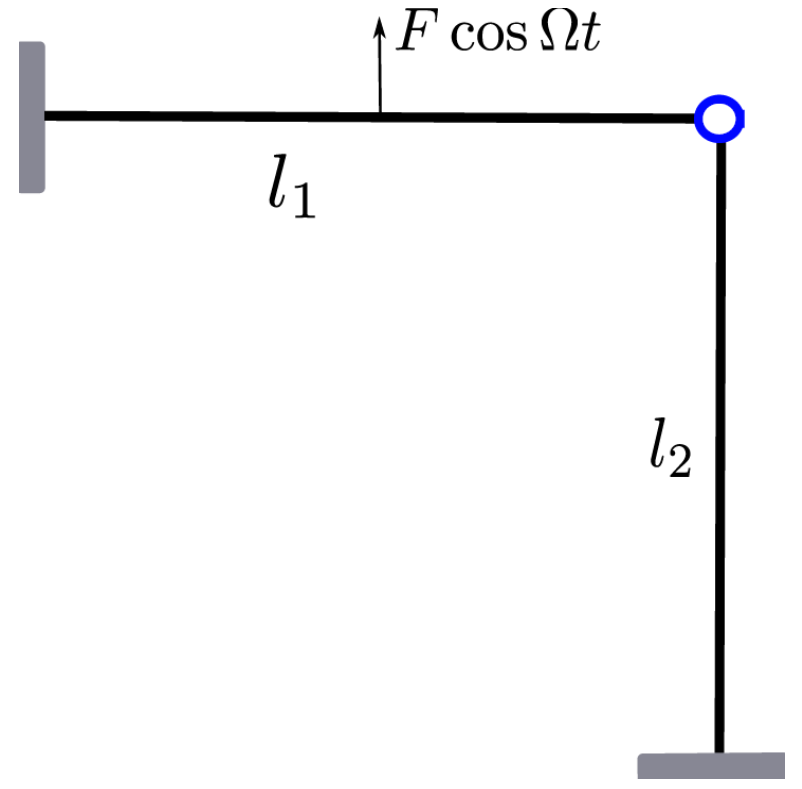This example is motivated by the internally resonant T-beam structure described here
Dou, S., Strachan, B. S., Shaw, S. W., & Jensen, J. S. (2015). Structural optimization for nonlinear dynamic response. Philosophical Transactions of the Royal Society A: Mathematical, Physical and Engineering Sciences, 373(2051). <https://doi.org/10.1098/RSTA.2014.0408>
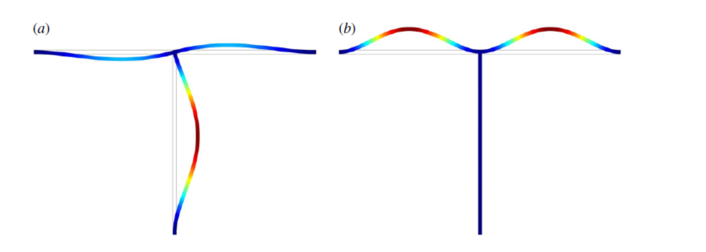We model this structure as a union of two straight von Karman beams which results in DAE as follows
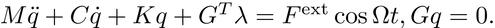
where
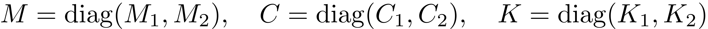
and the linear configuration constraints 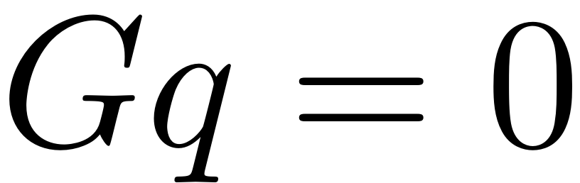 denote the continuity condition of displacements at the joint.
Finite element code taken from the following package:
Jain, S., Marconi, J., Tiso P. (2020). YetAnotherFEcode (Version v1.1). Zenodo. http://doi.org/10.5281/zenodo.4011282
Generate model
clear all nElements1 = 10; nElements2 = 14; [B,A,fnl,fext,outdof] = build_model_1st(nElements1,nElements2); n = size(A,1); disp(['Phase space dimensionality = ' num2str(n)])
Building FE model Assembling M,C,K matrices Applying boundary conditions Getting nonlinearity coefficients Loaded tensors from storage Total time spent on model assembly = 00:00:09 Assembling external force vector Building FE model Assembling M,C,K matrices Applying boundary conditions Getting nonlinearity coefficients Loaded tensors from storage Total time spent on model assembly = 00:00:00 Assembling external force vector Phase space dimensionality = 146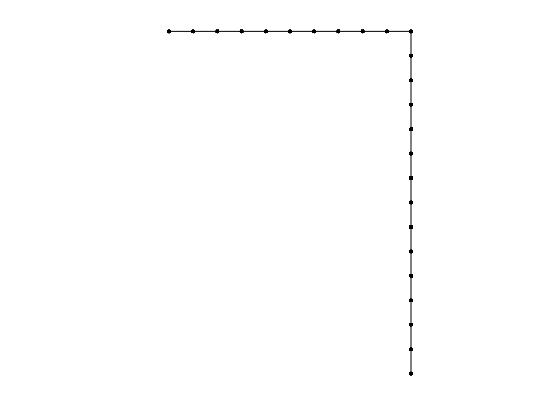 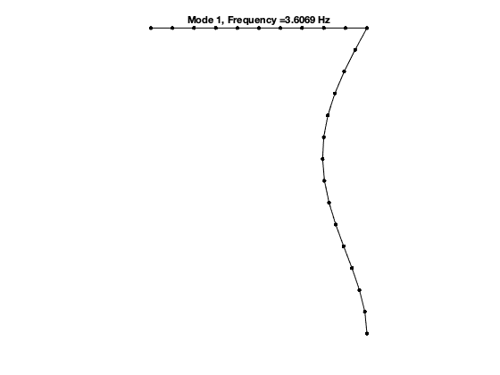 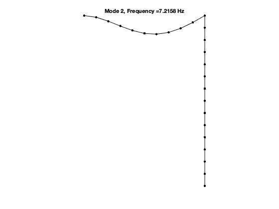
Dynamical system setup
DS = DynamicalSystem(); set(DS,'B',B,'A',A,'fnl',fnl); set(DS.Options,'Emax',8,'Nmax',10,'notation','multiindex')
due to the added configuration constraints, the updated damping matrix is not propotional anymore
set(DS.Options,'RayleighDamping',false,'sigma',0.5);
add forcing
epsilon = 1e-1*1e1; kappas = [1; -1]; coeffs = [fext fext]/2; DS.add_forcing(coeffs, kappas, epsilon);
Linear Modal analysis and SSM setup
[V,D,W] = DS.linear_spectral_analysis();
The first 8 nonzero eigenvalues are given as 1.0e+02 * -0.0004 + 0.2266i -0.0004 - 0.2266i -0.0015 + 0.4534i -0.0015 - 0.4534i -0.0039 + 0.7344i -0.0039 - 0.7344i -0.0154 + 1.4693i -0.0154 - 1.4693i
Setup for SSM Computation
S = SSM(DS); set(S.Options, 'reltol', 0.5,'notation','multiindex'); resonant_modes = [1 2 3 4]; % choose master spectral subspace mFreq = [1/2 1]; % internal resonance relation vector order = 5; % SSM expansion order
SSM_epSweeps:
continuation of FRC w.r.t  at sampled 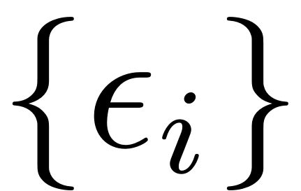
at sampled 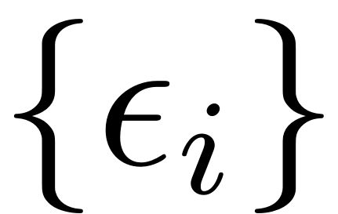
set(S.FRCOptions,'sampStyle', 'cocoBD'); % sampling style set(S.contOptions, 'PtMX', 200, 'h_max', 50,'h_min',0.01,'MaxRes',1); % continuation setting set(S.FRCOptions, 'nCycle',5000, 'initialSolver', 'fsolve'); % initial solution scheme set(S.FRCOptions, 'coordinates', 'cartesian'); % two coordinate representations set(S.Options,'contribNonAuto',false); epsSamp = [1e-1 5e-1 1]*epsilon; freqRange = [0.8 1.2]*imag(D(3)); S.SSM_epSweeps('sweeps',resonant_modes,order,mFreq,epsSamp,freqRange,outdof);
The master subspace contains the following eigenvalues
lambda1 == - 0.0366857 + 22.6627i
lambda2 == (-0.0366857) - 22.6627i
lambda3 == - 0.146825 + 45.3379i
lambda4 == (-0.146825) - 45.3379i
(near) outer resonance detected for the following combinations of master eigenvalues
They are in resonance with the following eigenvalues of the slave subspace
1*lambda1 + 0*lambda2 + 1*lambda3 + 0*lambda4 == - 0.385295 + 73.4437i
0*lambda1 + 1*lambda2 + 2*lambda3 + 0*lambda4 == - 0.385295 + 73.4437i
3*lambda1 + 0*lambda2 + 0*lambda3 + 0*lambda4 == - 0.385295 + 73.4437i
.
.
.
0*lambda1 + 0*lambda2 + 3*lambda3 + 0*lambda4 == - 1.542136 + 146.927i
2*lambda1 + 0*lambda2 + 2*lambda3 + 0*lambda4 == - 1.542136 + 146.927i
0*lambda1 + 0*lambda2 + 4*lambda3 + 1*lambda4 == - 1.542136 + 146.927i
.
.
.
sigma_out = 42
(near) inner resonance detected for the following combination of master eigenvalues:
0*lambda1 + 1*lambda2 + 1*lambda3 + 0*lambda4 == lambda1
1*lambda1 + 0*lambda2 + 1*lambda3 + 1*lambda4 == lambda1
2*lambda1 + 1*lambda2 + 0*lambda3 + 0*lambda4 == lambda1
.
.
.
2*lambda1 + 0*lambda2 + 0*lambda3 + 2*lambda4 == lambda4
0*lambda1 + 0*lambda2 + 2*lambda3 + 3*lambda4 == lambda4
0*lambda1 + 4*lambda2 + 1*lambda3 + 0*lambda4 == lambda4
.
.
.
sigma_in = 42
Due to (near) outer resonance, the exisitence of the manifold is questionable and the underlying computation may suffer.
Attempting manifold computation
Manifold computation time at order 2 = 00:00:00
Estimated memory usage at order 2 = 3.31E-01 MB
Manifold computation time at order 3 = 00:00:00
Estimated memory usage at order 3 = 5.97E-01 MB
Manifold computation time at order 4 = 00:00:00
Estimated memory usage at order 4 = 1.23E+00 MB
Manifold computation time at order 5 = 00:00:00
Estimated memory usage at order 5 = 2.21E+00 MB
Equation solved.
fsolve completed because the vector of function values is near zero
as measured by the value of the function tolerance, and
the problem appears regular as measured by the gradient.
Run='sweepseps.ep': Continue equilibria with varied epsilon.
STEP DAMPING NORMS COMPUTATION TIMES
IT SIT GAMMA ||d|| ||f|| ||U|| F(x) DF(x) SOLVE
0 1.13e-13 9.08e+01 0.0 0.0 0.0
STEP TIME ||U|| LABEL TYPE eps Rez1 Rez2 Imz1 Imz2 om
0 00:00:00 9.0818e+01 1 EP 1.0000e+00 0.0000e+00 -5.2555e+01 0.0000e+00 1.8253e+01 4.5338e+01
1 00:00:01 9.0818e+01 2 UZ 1.0000e+00 0.0000e+00 -5.2555e+01 0.0000e+00 1.8253e+01 4.5338e+01
9 00:00:01 7.6159e+01 3 UZ 5.0000e-01 0.0000e+00 -3.9718e+01 0.0000e+00 1.7164e+01 4.5338e+01
10 00:00:01 7.0342e+01 4 3.5187e-01 0.0000e+00 -3.4069e+01 0.0000e+00 1.6894e+01 4.5338e+01
14 00:00:02 5.5740e+01 5 UZ 1.0000e-01 0.0000e+00 -1.6341e+01 0.0000e+00 1.6083e+01 4.5338e+01
15 00:00:02 5.4852e+01 6 EP 9.0000e-02 0.0000e+00 -1.4962e+01 0.0000e+00 1.5898e+01 4.5338e+01
STEP TIME ||U|| LABEL TYPE eps Rez1 Rez2 Imz1 Imz2 om
0 00:00:02 9.0818e+01 7 EP 1.0000e+00 0.0000e+00 -5.2555e+01 0.0000e+00 1.8253e+01 4.5338e+01
6 00:00:02 9.3229e+01 8 EP 1.1000e+00 0.0000e+00 -5.4548e+01 0.0000e+00 1.8478e+01 4.5338e+01
Run='sweepseps1.ep': Continue equilibria with varied omega at eps equal to 1.000000e-01.
STEP DAMPING NORMS COMPUTATION TIMES
IT SIT GAMMA ||d|| ||f|| ||U|| F(x) DF(x) SOLVE
0 4.04e-14 7.19e+01 0.0 0.0 0.0
STEP TIME ||U|| LABEL TYPE om Rez1 Rez2 Imz1 Imz2 eps
0 00:00:00 7.1850e+01 1 EP 4.5338e+01 0.0000e+00 -1.6341e+01 0.0000e+00 1.6083e+01 1.0000e-01
10 00:00:00 6.8814e+01 2 4.5169e+01 0.0000e+00 -1.5642e+01 0.0000e+00 9.0990e+00 1.0000e-01
14 00:00:01 6.7264e+01 3 SN 4.5060e+01 0.0000e+00 -1.3945e+01 0.0000e+00 6.1061e+00 1.0000e-01
14 00:00:01 6.7264e+01 4 BP 4.5060e+01 0.0000e+00 -1.3945e+01 0.0000e+00 6.1061e+00 1.0000e-01
20 00:00:01 6.4071e+01 5 4.4613e+01 0.0000e+00 -7.7568e+00 0.0000e+00 1.4339e+00 1.0000e-01
30 00:00:02 6.0000e+01 6 4.2378e+01 0.0000e+00 -2.0270e+00 0.0000e+00 6.5236e-02 1.0000e-01
39 00:00:02 5.1303e+01 7 EP 3.6270e+01 0.0000e+00 -6.6304e-01 0.0000e+00 -8.4964e-04 1.0000e-01
STEP TIME ||U|| LABEL TYPE om Rez1 Rez2 Imz1 Imz2 eps
0 00:00:03 7.1850e+01 8 EP 4.5338e+01 0.0000e+00 -1.6341e+01 0.0000e+00 1.6083e+01 1.0000e-01
10 00:00:03 7.4358e+01 9 4.5472e+01 0.0000e+00 -1.3002e+01 0.0000e+00 2.2974e+01 1.0000e-01
20 00:00:03 7.6206e+01 10 4.5619e+01 0.0000e+00 -1.0293e+00 0.0000e+00 2.8661e+01 1.0000e-01
30 00:00:04 7.4767e+01 11 4.5688e+01 0.0000e+00 1.1756e+01 0.0000e+00 2.3864e+01 1.0000e-01
39 00:00:07 7.1605e+01 12 SN 4.5710e+01 0.0000e+00 1.6032e+01 0.0000e+00 1.4736e+01 1.0000e-01
39 00:00:07 7.1605e+01 13 BP 4.5710e+01 0.0000e+00 1.6032e+01 0.0000e+00 1.4736e+01 1.0000e-01
40 00:00:07 7.1047e+01 14 4.5715e+01 0.0000e+00 1.6043e+01 0.0000e+00 1.3288e+01 1.0000e-01
50 00:00:08 6.7087e+01 15 4.5859e+01 0.0000e+00 1.1429e+01 0.0000e+00 4.0744e+00 1.0000e-01
60 00:00:08 6.7304e+01 16 4.7510e+01 0.0000e+00 2.7548e+00 0.0000e+00 2.3559e-01 1.0000e-01
70 00:00:09 7.2264e+01 17 5.1088e+01 0.0000e+00 1.0446e+00 0.0000e+00 4.4967e-02 1.0000e-01
73 00:00:09 7.6947e+01 18 EP 5.4405e+01 0.0000e+00 6.6269e-01 0.0000e+00 2.2322e-02 1.0000e-01
Run='sweepseps2.ep': Continue equilibria with varied omega at eps equal to 5.000000e-01.
STEP DAMPING NORMS COMPUTATION TIMES
IT SIT GAMMA ||d|| ||f|| ||U|| F(x) DF(x) SOLVE
0 8.00e-14 8.86e+01 0.0 0.0 0.0
STEP TIME ||U|| LABEL TYPE om Rez1 Rez2 Imz1 Imz2 eps
0 00:00:00 8.8631e+01 1 EP 4.5338e+01 0.0000e+00 -3.9718e+01 0.0000e+00 1.7164e+01 5.0000e-01
10 00:00:00 7.8907e+01 2 4.4842e+01 0.0000e+00 -3.2250e+01 0.0000e+00 7.8888e+00 5.0000e-01
11 00:00:01 7.7406e+01 3 SN 4.4753e+01 0.0000e+00 -3.0766e+01 0.0000e+00 6.8072e+00 5.0000e-01
11 00:00:01 7.7406e+01 4 BP 4.4753e+01 0.0000e+00 -3.0766e+01 0.0000e+00 6.8072e+00 5.0000e-01
20 00:00:01 6.1003e+01 5 4.2127e+01 0.0000e+00 -9.2614e+00 0.0000e+00 2.7644e-01 5.0000e-01
30 00:00:02 5.1756e+01 6 3.6439e+01 0.0000e+00 -3.3767e+00 0.0000e+00 -2.9906e-03 5.0000e-01
31 00:00:02 5.1510e+01 7 EP 3.6270e+01 0.0000e+00 -3.3138e+00 0.0000e+00 -3.9698e-03 5.0000e-01
STEP TIME ||U|| LABEL TYPE om Rez1 Rez2 Imz1 Imz2 eps
0 00:00:02 8.8631e+01 8 EP 4.5338e+01 0.0000e+00 -3.9718e+01 0.0000e+00 1.7164e+01 5.0000e-01
10 00:00:04 9.7345e+01 9 4.5741e+01 0.0000e+00 -4.2266e+01 0.0000e+00 2.9313e+01 5.0000e-01
20 00:00:04 1.0972e+02 10 4.6350e+01 0.0000e+00 -3.0721e+01 0.0000e+00 5.4102e+01 5.0000e-01
24 00:00:05 1.1268e+02 11 SN 4.6536e+01 0.0000e+00 -1.9906e+01 0.0000e+00 6.1538e+01 5.0000e-01
24 00:00:05 1.1268e+02 12 BP 4.6536e+01 0.0000e+00 -1.9906e+01 0.0000e+00 6.1538e+01 5.0000e-01
30 00:00:05 1.1431e+02 13 4.6739e+01 0.0000e+00 1.9923e+00 0.0000e+00 6.5914e+01 5.0000e-01
37 00:00:06 1.1126e+02 14 FP 4.6815e+01 0.0000e+00 2.5230e+01 0.0000e+00 5.7974e+01 5.0000e-01
37 00:00:06 1.1126e+02 15 SN 4.6815e+01 0.0000e+00 2.5230e+01 0.0000e+00 5.7974e+01 5.0000e-01
40 00:00:06 1.0817e+02 16 4.6801e+01 0.0000e+00 3.3233e+01 0.0000e+00 5.0556e+01 5.0000e-01
50 00:00:07 9.4405e+01 17 4.6646e+01 0.0000e+00 4.0884e+01 0.0000e+00 2.4672e+01 5.0000e-01
57 00:00:07 8.4334e+01 18 SN 4.6580e+01 0.0000e+00 3.5173e+01 0.0000e+00 1.2212e+01 5.0000e-01
57 00:00:08 8.4334e+01 19 FP 4.6580e+01 0.0000e+00 3.5173e+01 0.0000e+00 1.2212e+01 5.0000e-01
60 00:00:08 7.8672e+01 20 4.6623e+01 0.0000e+00 2.9487e+01 0.0000e+00 7.1616e+00 5.0000e-01
70 00:00:08 7.0627e+01 21 4.9377e+01 0.0000e+00 7.4628e+00 0.0000e+00 4.1133e-01 5.0000e-01
79 00:00:09 7.7085e+01 22 EP 5.4405e+01 0.0000e+00 3.3148e+00 0.0000e+00 1.1198e-01 5.0000e-01
Run='sweepseps3.ep': Continue equilibria with varied omega at eps equal to 1.
STEP DAMPING NORMS COMPUTATION TIMES
IT SIT GAMMA ||d|| ||f|| ||U|| F(x) DF(x) SOLVE
0 1.13e-13 1.02e+02 0.0 0.0 0.0
STEP TIME ||U|| LABEL TYPE om Rez1 Rez2 Imz1 Imz2 eps
0 00:00:00 1.0150e+02 1 EP 4.5338e+01 0.0000e+00 -5.2555e+01 0.0000e+00 1.8253e+01 1.0000e+00
10 00:00:00 8.7523e+01 2 4.4589e+01 0.0000e+00 -4.2164e+01 0.0000e+00 7.9790e+00 1.0000e+00
11 00:00:01 8.6800e+01 3 SN 4.4545e+01 0.0000e+00 -4.1531e+01 0.0000e+00 7.5837e+00 1.0000e+00
11 00:00:01 8.6800e+01 4 BP 4.4545e+01 0.0000e+00 -4.1531e+01 0.0000e+00 7.5837e+00 1.0000e+00
20 00:00:01 6.2248e+01 5 4.1396e+01 0.0000e+00 -1.4939e+01 0.0000e+00 3.4828e-01 1.0000e+00
29 00:00:02 5.2151e+01 6 EP 3.6270e+01 0.0000e+00 -6.6192e+00 0.0000e+00 -6.2126e-03 1.0000e+00
STEP TIME ||U|| LABEL TYPE om Rez1 Rez2 Imz1 Imz2 eps
0 00:00:02 1.0150e+02 7 EP 4.5338e+01 0.0000e+00 -5.2555e+01 0.0000e+00 1.8253e+01 1.0000e+00
10 00:00:02 1.1396e+02 8 4.5942e+01 0.0000e+00 -5.7760e+01 0.0000e+00 3.2343e+01 1.0000e+00
20 00:00:03 1.3334e+02 9 SN 4.6901e+01 0.0000e+00 -4.8797e+01 0.0000e+00 6.5638e+01 1.0000e+00
20 00:00:03 1.3334e+02 10 BP 4.6901e+01 0.0000e+00 -4.8797e+01 0.0000e+00 6.5638e+01 1.0000e+00
20 00:00:03 1.3377e+02 11 4.6923e+01 0.0000e+00 -4.8125e+01 0.0000e+00 6.6546e+01 1.0000e+00
30 00:00:03 1.4335e+02 12 4.7588e+01 0.0000e+00 -7.5891e+00 0.0000e+00 8.9173e+01 1.0000e+00
39 00:00:04 1.3885e+02 13 FP 4.7783e+01 0.0000e+00 3.4986e+01 0.0000e+00 7.8308e+01 1.0000e+00
39 00:00:04 1.3885e+02 14 SN 4.7783e+01 0.0000e+00 3.4986e+01 0.0000e+00 7.8308e+01 1.0000e+00
40 00:00:04 1.3748e+02 15 4.7781e+01 0.0000e+00 3.9022e+01 0.0000e+00 7.5126e+01 1.0000e+00
50 00:00:05 1.1847e+02 16 4.7558e+01 0.0000e+00 5.6828e+01 0.0000e+00 3.9062e+01 1.0000e+00
60 00:00:06 9.4802e+01 17 4.7320e+01 0.0000e+00 4.5782e+01 0.0000e+00 1.2572e+01 1.0000e+00
61 00:00:06 9.4298e+01 18 SN 4.7320e+01 0.0000e+00 4.5363e+01 0.0000e+00 1.2192e+01 1.0000e+00
61 00:00:06 9.4297e+01 19 FP 4.7320e+01 0.0000e+00 4.5362e+01 0.0000e+00 1.2192e+01 1.0000e+00
70 00:00:07 7.4074e+01 20 4.8518e+01 0.0000e+00 1.9666e+01 0.0000e+00 1.4874e+00 1.0000e+00
80 00:00:08 7.6899e+01 21 5.3916e+01 0.0000e+00 7.0189e+00 0.0000e+00 2.4627e-01 1.0000e+00
81 00:00:08 7.7519e+01 22 EP 5.4405e+01 0.0000e+00 6.6381e+00 0.0000e+00 2.2626e-01 1.0000e+00
Calculate FRC in physical domain at epsilon 1.000000e-01
Calculate FRC in physical domain at epsilon 5.000000e-01
Calculate FRC in physical domain at epsilon 1
FRCs in reduced coordinates for distinct forcing amplitudes
As is evident, only the second mode, which is in resonance with the forcing frequency, is excited in this case.
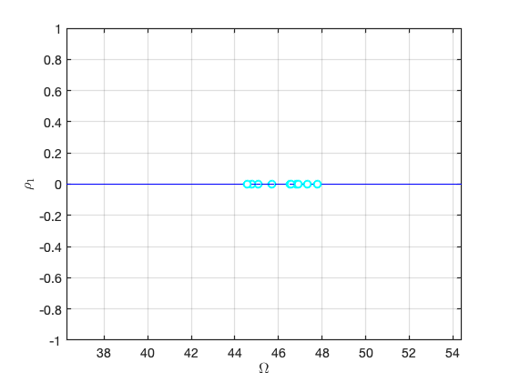 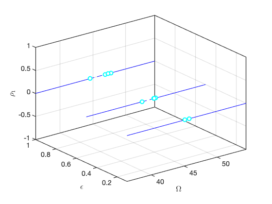 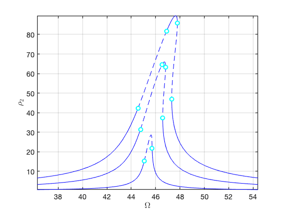 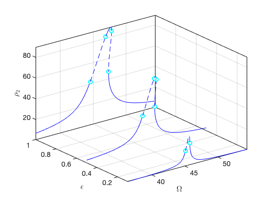
FRCs in full coordinates for distinct forcing amplitudes
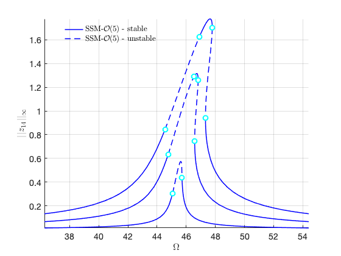 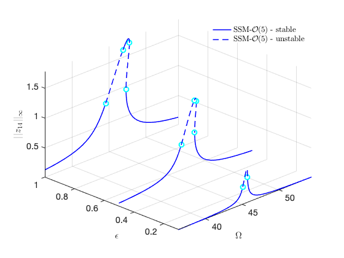 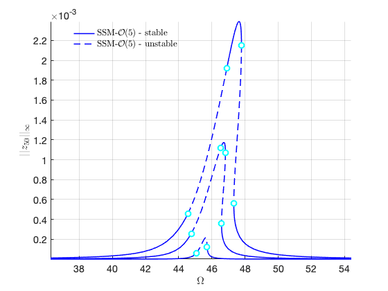 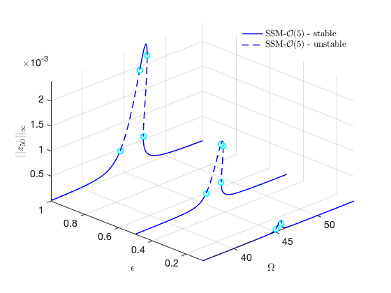Check the convergence
We check for the convergence of the FRC with increasing orders
sol = ep_read_solution('sweepseps1.ep',1); epsilon = sol.p(2); kappas = [1; -1]; coeffs = [fext fext]/2; DS.add_forcing(coeffs, kappas, epsilon); omegaRange = [0.95 1.1]*imag(D(3)); start = tic; FRC_O3 = S.SSM_isol2ep('isol-3', resonant_modes, order-2, mFreq,... 'freq', omegaRange, outdof, {sol.p,sol.x}); timings.FRC_O3 = toc(start); start = tic; FRC_O5 = S.SSM_isol2ep('isol-5', resonant_modes, order, mFreq,... 'freq', omegaRange, outdof, {sol.p,sol.x}); timings.FRC_O5 = toc(start); start = tic; FRC_O7 = S.SSM_isol2ep('isol-7', resonant_modes, order+2, mFreq,... 'freq', omegaRange, outdof, {sol.p,sol.x}); timings.FRC_O7 = toc(start); start = tic; FRC_O9 = S.SSM_isol2ep('isol-9', resonant_modes, order+4, mFreq,... 'freq', omegaRange, outdof, {sol.p,sol.x}); timings.FRC_O9 = toc(start);
The master subspace contains the following eigenvalues lambda1 == - 0.0366857 + 22.6627i lambda2 == (-0.0366857) - 22.6627i lambda3 == - 0.146825 + 45.3379i lambda4 == (-0.146825) - 45.3379i (near) outer resonance detected for the following combinations of master eigenvalues They are in resonance with the following eigenvalues of the slave subspace 1*lambda1 + 0*lambda2 + 1*lambda3 + 0*lambda4 == - 0.385295 + 73.4437i 0*lambda1 + 1*lambda2 + 2*lambda3 + 0*lambda4 == - 0.385295 + 73.4437i . . . sigma_out = 42 (near) inner resonance detected for the following combination of master eigenvalues: 0*lambda1 + 1*lambda2 + 1*lambda3 + 0*lambda4 == lambda1 1*lambda1 + 0*lambda2 + 1*lambda3 + 1*lambda4 == lambda1 . . . sigma_in = 42
FRCs at order 3
Due to (near) outer resonance, the exisitence of the manifold is questionable and the underlying computation may suffer.
Attempting manifold computation
Manifold computation time at order 2 = 00:00:00
Estimated memory usage at order 2 = 3.29E-01 MB
Manifold computation time at order 3 = 00:00:00
Estimated memory usage at order 3 = 5.95E-01 MB
Equation solved.
fsolve completed because the vector of function values is near zero
as measured by the value of the function tolerance, and
the problem appears regular as measured by the gradient.
Run='isol-3.ep': Continue equilibria along primary branch.
STEP DAMPING NORMS COMPUTATION TIMES
IT SIT GAMMA ||d|| ||f|| ||U|| F(x) DF(x) SOLVE
0 6.30e-14 7.18e+01 0.0 0.0 0.0
STEP TIME ||U|| LABEL TYPE om Rez1 Rez2 Imz1 Imz2 eps
0 00:00:00 7.1802e+01 1 EP 4.5338e+01 0.0000e+00 -1.6328e+01 0.0000e+00 1.5988e+01 1.0000e-01
10 00:00:01 6.8780e+01 2 4.5167e+01 0.0000e+00 -1.5607e+01 0.0000e+00 9.0349e+00 1.0000e-01
14 00:00:01 6.7268e+01 3 SN 4.5061e+01 0.0000e+00 -1.3949e+01 0.0000e+00 6.1162e+00 1.0000e-01
14 00:00:01 6.7268e+01 4 BP 4.5061e+01 0.0000e+00 -1.3949e+01 0.0000e+00 6.1162e+00 1.0000e-01
20 00:00:01 6.4049e+01 5 4.4607e+01 0.0000e+00 -7.7050e+00 0.0000e+00 1.4125e+00 1.0000e-01
27 00:00:02 6.1026e+01 6 EP 4.3071e+01 0.0000e+00 -2.6411e+00 0.0000e+00 1.2521e-01 1.0000e-01
STEP TIME ||U|| LABEL TYPE om Rez1 Rez2 Imz1 Imz2 eps
0 00:00:02 7.1802e+01 7 EP 4.5338e+01 0.0000e+00 -1.6328e+01 0.0000e+00 1.5988e+01 1.0000e-01
10 00:00:02 7.4298e+01 8 4.5473e+01 0.0000e+00 -1.3019e+01 0.0000e+00 2.2864e+01 1.0000e-01
20 00:00:03 7.6144e+01 9 4.5623e+01 0.0000e+00 -1.0762e+00 0.0000e+00 2.8571e+01 1.0000e-01
30 00:00:03 7.4726e+01 10 4.5691e+01 0.0000e+00 1.1723e+01 0.0000e+00 2.3810e+01 1.0000e-01
39 00:00:04 7.1719e+01 11 SN 4.5711e+01 0.0000e+00 1.5984e+01 0.0000e+00 1.5062e+01 1.0000e-01
39 00:00:04 7.1719e+01 12 BP 4.5711e+01 0.0000e+00 1.5984e+01 0.0000e+00 1.5062e+01 1.0000e-01
40 00:00:04 7.1037e+01 13 4.5717e+01 0.0000e+00 1.6025e+01 0.0000e+00 1.3278e+01 1.0000e-01
50 00:00:05 6.7096e+01 14 4.5859e+01 0.0000e+00 1.1452e+01 0.0000e+00 4.0949e+00 1.0000e-01
60 00:00:05 6.7295e+01 15 4.7504e+01 0.0000e+00 2.7632e+00 0.0000e+00 2.3689e-01 1.0000e-01
69 00:00:06 7.0554e+01 16 EP 4.9872e+01 0.0000e+00 1.3241e+00 0.0000e+00 6.6106e-02 1.0000e-01
FRC in parametrisation space:

FRC in physical space:
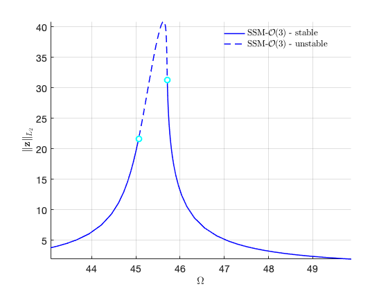 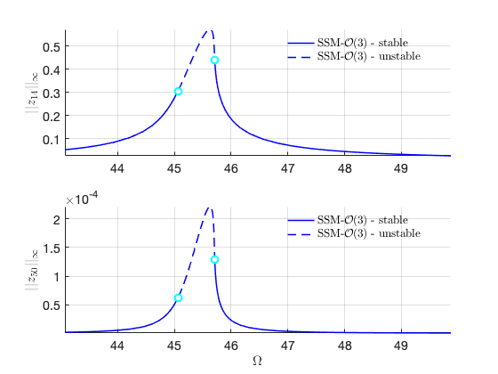FRCs at order 5
Due to (near) outer resonance, the exisitence of the manifold is questionable and the underlying computation may suffer.
Attempting manifold computation
Manifold computation time at order 2 = 00:00:00
Estimated memory usage at order 2 = 3.31E-01 MB
Manifold computation time at order 3 = 00:00:00
Estimated memory usage at order 3 = 5.97E-01 MB
Manifold computation time at order 4 = 00:00:00
Estimated memory usage at order 4 = 1.23E+00 MB
Manifold computation time at order 5 = 00:00:00
Estimated memory usage at order 5 = 2.21E+00 MB
Equation solved at initial point.
fsolve completed because the vector of function values at the initial point
is near zero as measured by the value of the function tolerance, and
the problem appears regular as measured by the gradient.
Run='isol-5.ep': Continue equilibria along primary branch.
STEP DAMPING NORMS COMPUTATION TIMES
IT SIT GAMMA ||d|| ||f|| ||U|| F(x) DF(x) SOLVE
0 4.04e-14 7.19e+01 0.0 0.0 0.0
STEP TIME ||U|| LABEL TYPE om Rez1 Rez2 Imz1 Imz2 eps
0 00:00:00 7.1850e+01 1 EP 4.5338e+01 0.0000e+00 -1.6341e+01 0.0000e+00 1.6083e+01 1.0000e-01
10 00:00:00 6.8814e+01 2 4.5169e+01 0.0000e+00 -1.5642e+01 0.0000e+00 9.0990e+00 1.0000e-01
14 00:00:00 6.7264e+01 3 SN 4.5060e+01 0.0000e+00 -1.3945e+01 0.0000e+00 6.1061e+00 1.0000e-01
14 00:00:00 6.7264e+01 4 BP 4.5060e+01 0.0000e+00 -1.3945e+01 0.0000e+00 6.1061e+00 1.0000e-01
20 00:00:01 6.4071e+01 5 4.4613e+01 0.0000e+00 -7.7568e+00 0.0000e+00 1.4339e+00 1.0000e-01
27 00:00:01 6.1026e+01 6 EP 4.3071e+01 0.0000e+00 -2.6411e+00 0.0000e+00 1.2521e-01 1.0000e-01
STEP TIME ||U|| LABEL TYPE om Rez1 Rez2 Imz1 Imz2 eps
0 00:00:01 7.1850e+01 7 EP 4.5338e+01 0.0000e+00 -1.6341e+01 0.0000e+00 1.6083e+01 1.0000e-01
10 00:00:01 7.4358e+01 8 4.5472e+01 0.0000e+00 -1.3002e+01 0.0000e+00 2.2974e+01 1.0000e-01
20 00:00:02 7.6206e+01 9 4.5619e+01 0.0000e+00 -1.0293e+00 0.0000e+00 2.8661e+01 1.0000e-01
30 00:00:03 7.4767e+01 10 4.5688e+01 0.0000e+00 1.1756e+01 0.0000e+00 2.3864e+01 1.0000e-01
39 00:00:04 7.1605e+01 11 SN 4.5710e+01 0.0000e+00 1.6032e+01 0.0000e+00 1.4736e+01 1.0000e-01
39 00:00:04 7.1605e+01 12 BP 4.5710e+01 0.0000e+00 1.6032e+01 0.0000e+00 1.4736e+01 1.0000e-01
40 00:00:04 7.1047e+01 13 4.5715e+01 0.0000e+00 1.6043e+01 0.0000e+00 1.3288e+01 1.0000e-01
50 00:00:04 6.7087e+01 14 4.5859e+01 0.0000e+00 1.1429e+01 0.0000e+00 4.0744e+00 1.0000e-01
60 00:00:05 6.7304e+01 15 4.7510e+01 0.0000e+00 2.7548e+00 0.0000e+00 2.3559e-01 1.0000e-01
69 00:00:06 7.0554e+01 16 EP 4.9872e+01 0.0000e+00 1.3241e+00 0.0000e+00 6.6106e-02 1.0000e-01
FRC in parametrisation space:
FRC in physical space:
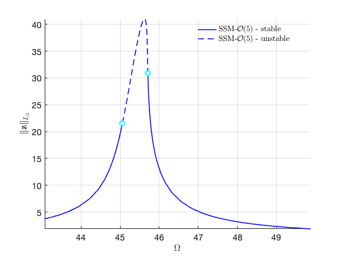FRCs at order 7
Due to (near) outer resonance, the exisitence of the manifold is questionable and the underlying computation may suffer.
Attempting manifold computation
Manifold computation time at order 2 = 00:00:00
Estimated memory usage at order 2 = 3.35E-01 MB
Manifold computation time at order 3 = 00:00:00
Estimated memory usage at order 3 = 6.01E-01 MB
Manifold computation time at order 4 = 00:00:00
Estimated memory usage at order 4 = 1.23E+00 MB
Manifold computation time at order 5 = 00:00:00
Estimated memory usage at order 5 = 2.21E+00 MB
Manifold computation time at order 6 = 00:00:01
Estimated memory usage at order 6 = 4.02E+00 MB
Manifold computation time at order 7 = 00:00:04
Estimated memory usage at order 7 = 6.64E+00 MB
Equation solved.
fsolve completed because the vector of function values is near zero
as measured by the value of the function tolerance, and
the problem appears regular as measured by the gradient.
Run='isol-7.ep': Continue equilibria along primary branch.
STEP DAMPING NORMS COMPUTATION TIMES
IT SIT GAMMA ||d|| ||f|| ||U|| F(x) DF(x) SOLVE
0 1.73e-13 7.18e+01 0.0 0.0 0.0
STEP TIME ||U|| LABEL TYPE om Rez1 Rez2 Imz1 Imz2 eps
0 00:00:00 7.1849e+01 1 EP 4.5338e+01 0.0000e+00 -1.6341e+01 0.0000e+00 1.6080e+01 1.0000e-01
10 00:00:00 6.8813e+01 2 4.5169e+01 0.0000e+00 -1.5641e+01 0.0000e+00 9.0977e+00 1.0000e-01
14 00:00:01 6.7264e+01 3 SN 4.5060e+01 0.0000e+00 -1.3945e+01 0.0000e+00 6.1062e+00 1.0000e-01
14 00:00:01 6.7264e+01 4 BP 4.5060e+01 0.0000e+00 -1.3945e+01 0.0000e+00 6.1062e+00 1.0000e-01
20 00:00:01 6.4071e+01 5 4.4613e+01 0.0000e+00 -7.7561e+00 0.0000e+00 1.4336e+00 1.0000e-01
27 00:00:01 6.1026e+01 6 EP 4.3071e+01 0.0000e+00 -2.6411e+00 0.0000e+00 1.2521e-01 1.0000e-01
STEP TIME ||U|| LABEL TYPE om Rez1 Rez2 Imz1 Imz2 eps
0 00:00:01 7.1849e+01 7 EP 4.5338e+01 0.0000e+00 -1.6341e+01 0.0000e+00 1.6080e+01 1.0000e-01
10 00:00:02 7.4356e+01 8 4.5472e+01 0.0000e+00 -1.3003e+01 0.0000e+00 2.2970e+01 1.0000e-01
20 00:00:02 7.6203e+01 9 4.5620e+01 0.0000e+00 -1.0297e+00 0.0000e+00 2.8657e+01 1.0000e-01
30 00:00:03 7.4765e+01 10 4.5688e+01 0.0000e+00 1.1757e+01 0.0000e+00 2.3860e+01 1.0000e-01
39 00:00:03 7.1607e+01 11 SN 4.5710e+01 0.0000e+00 1.6031e+01 0.0000e+00 1.4742e+01 1.0000e-01
39 00:00:03 7.1607e+01 12 BP 4.5710e+01 0.0000e+00 1.6031e+01 0.0000e+00 1.4742e+01 1.0000e-01
40 00:00:03 7.1046e+01 13 4.5715e+01 0.0000e+00 1.6042e+01 0.0000e+00 1.3286e+01 1.0000e-01
50 00:00:04 6.7087e+01 14 4.5859e+01 0.0000e+00 1.1430e+01 0.0000e+00 4.0745e+00 1.0000e-01
60 00:00:04 6.7304e+01 15 4.7510e+01 0.0000e+00 2.7548e+00 0.0000e+00 2.3559e-01 1.0000e-01
69 00:00:05 7.0554e+01 16 EP 4.9872e+01 0.0000e+00 1.3241e+00 0.0000e+00 6.6106e-02 1.0000e-01
FRC in parametrisation space:
FRC in physical space:
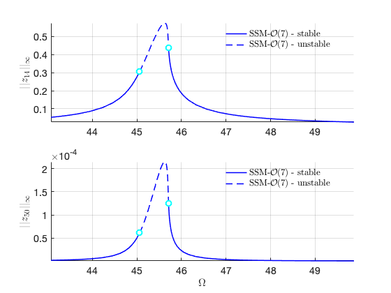FRCs at order 9
Due to (near) outer resonance, the exisitence of the manifold is questionable and the underlying computation may suffer.
Attempting manifold computation
Manifold computation time at order 2 = 00:00:00
Estimated memory usage at order 2 = 3.41E-01 MB
Manifold computation time at order 3 = 00:00:00
Estimated memory usage at order 3 = 6.07E-01 MB
Manifold computation time at order 4 = 00:00:00
Estimated memory usage at order 4 = 1.24E+00 MB
Manifold computation time at order 5 = 00:00:00
Estimated memory usage at order 5 = 2.22E+00 MB
Manifold computation time at order 6 = 00:00:01
Estimated memory usage at order 6 = 4.03E+00 MB
Manifold computation time at order 7 = 00:00:03
Estimated memory usage at order 7 = 6.64E+00 MB
Manifold computation time at order 8 = 00:00:12
Estimated memory usage at order 8 = 1.08E+01 MB
Manifold computation time at order 9 = 00:00:31
Estimated memory usage at order 9 = 1.66E+01 MB
Equation solved.
fsolve completed because the vector of function values is near zero
as measured by the value of the function tolerance, and
the problem appears regular as measured by the gradient.
Run='isol-9.ep': Continue equilibria along primary branch.
STEP DAMPING NORMS COMPUTATION TIMES
IT SIT GAMMA ||d|| ||f|| ||U|| F(x) DF(x) SOLVE
0 6.19e-14 7.18e+01 0.0 0.0 0.0
STEP TIME ||U|| LABEL TYPE om Rez1 Rez2 Imz1 Imz2 eps
0 00:00:00 7.1849e+01 1 EP 4.5338e+01 0.0000e+00 -1.6341e+01 0.0000e+00 1.6080e+01 1.0000e-01
10 00:00:00 6.8813e+01 2 4.5169e+01 0.0000e+00 -1.5641e+01 0.0000e+00 9.0978e+00 1.0000e-01
14 00:00:01 6.7264e+01 3 SN 4.5060e+01 0.0000e+00 -1.3945e+01 0.0000e+00 6.1062e+00 1.0000e-01
14 00:00:01 6.7264e+01 4 BP 4.5060e+01 0.0000e+00 -1.3945e+01 0.0000e+00 6.1062e+00 1.0000e-01
20 00:00:02 6.4071e+01 5 4.4613e+01 0.0000e+00 -7.7561e+00 0.0000e+00 1.4336e+00 1.0000e-01
27 00:00:03 6.1026e+01 6 EP 4.3071e+01 0.0000e+00 -2.6411e+00 0.0000e+00 1.2521e-01 1.0000e-01
STEP TIME ||U|| LABEL TYPE om Rez1 Rez2 Imz1 Imz2 eps
0 00:00:03 7.1849e+01 7 EP 4.5338e+01 0.0000e+00 -1.6341e+01 0.0000e+00 1.6080e+01 1.0000e-01
10 00:00:04 7.4356e+01 8 4.5472e+01 0.0000e+00 -1.3003e+01 0.0000e+00 2.2970e+01 1.0000e-01
20 00:00:04 7.6203e+01 9 4.5620e+01 0.0000e+00 -1.0297e+00 0.0000e+00 2.8657e+01 1.0000e-01
30 00:00:05 7.4765e+01 10 4.5688e+01 0.0000e+00 1.1757e+01 0.0000e+00 2.3860e+01 1.0000e-01
39 00:00:06 7.1607e+01 11 SN 4.5710e+01 0.0000e+00 1.6031e+01 0.0000e+00 1.4742e+01 1.0000e-01
39 00:00:06 7.1607e+01 12 BP 4.5710e+01 0.0000e+00 1.6031e+01 0.0000e+00 1.4742e+01 1.0000e-01
40 00:00:06 7.1046e+01 13 4.5715e+01 0.0000e+00 1.6042e+01 0.0000e+00 1.3286e+01 1.0000e-01
50 00:00:07 6.7087e+01 14 4.5859e+01 0.0000e+00 1.1430e+01 0.0000e+00 4.0745e+00 1.0000e-01
60 00:00:07 6.7304e+01 15 4.7510e+01 0.0000e+00 2.7548e+00 0.0000e+00 2.3559e-01 1.0000e-01
69 00:00:08 7.0554e+01 16 EP 4.9872e+01 0.0000e+00 1.3241e+00 0.0000e+00 6.6106e-02 1.0000e-01
FRC in parametrisation space:
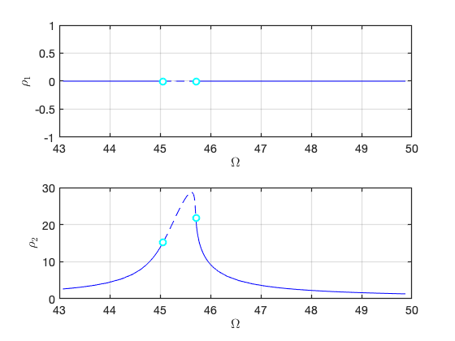 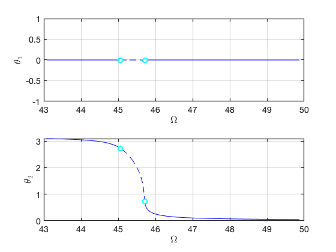FRC in physical space:
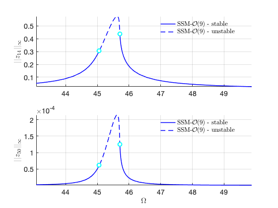Compare FRCs at different orders to check for convergence
FRCs = {FRC_O3,FRC_O5,FRC_O7,FRC_O9};
thm = struct();
thm.SN = {'LineStyle', 'none', 'LineWidth', 2, ...
'Color', 'cyan', 'Marker', 'o', 'MarkerSize', 8, 'MarkerEdgeColor', ...
'cyan', 'MarkerFaceColor', 'white'};
thm.HB = {'LineStyle', 'none', 'LineWidth', 2, ...
'Color', 'black', 'Marker', 's', 'MarkerSize', 8, 'MarkerEdgeColor', ...
'black', 'MarkerFaceColor', 'white'};
color = {'r','k','m','b','g'};
figure;
ax1 = gca;
for k=1:numel(FRCs)
FRC = FRCs{k};
SNidx = FRC.SNidx;
HBidx = FRC.HBidx;
FRC.st = double(FRC.st);
FRC.st(HBidx) = nan;
FRC.st(SNidx) = nan;
% color
ST = cell(2,1);
ST{1} = {[color{k},'--'],'LineWidth',1.5}; % unstable
ST{2} = {[color{k},'-'],'LineWidth',1.5}; % stable
legs = ['SSM-$\mathcal{O}(',num2str(2*k+1),')$-unstable'];
legu = ['SSM-$\mathcal{O}(',num2str(2*k+1),')$-stable'];
hold(ax1,'on');
plot_stab_lines(FRC.om,FRC.Aout_frc(:,1),FRC.st,ST,legs,legu);
SNfig = plot(FRC.om(SNidx),FRC.Aout_frc(SNidx,1),thm.SN{:});
set(get(get(SNfig,'Annotation'),'LegendInformation'),...
'IconDisplayStyle','off');
HBfig = plot(FRC.om(HBidx),FRC.Aout_frc(HBidx,1),thm.HB{:});
set(get(get(HBfig,'Annotation'),'LegendInformation'),...
'IconDisplayStyle','off');
xlabel('$\Omega$','Interpreter','latex');
ylabel('$||u_1||_{\infty}$','Interpreter','latex');
set(gca,'FontSize',14);
grid on; axis tight;
end
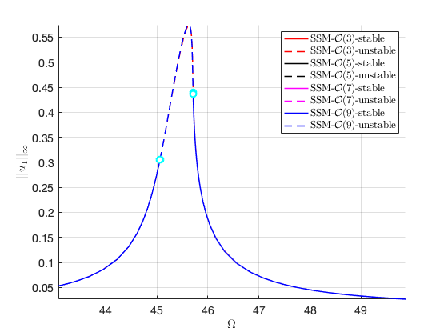 Secondary branches
We observed the FRC converges well at O(5) approximation. Next we perform branch switching of branch points observed in this continuation run.
bd = coco_bd_read('isol-5.ep'); BPlabs = coco_bd_labs(bd, 'BP'); set(S.contOptions, 'PtMX', [100,0]); S.SSM_BP2ep('o5-bp1','isol-5',BPlabs(1),'freq',omegaRange,outdof);
Run='o5-bp1.ep': Continue equilibria along secondary branch from label 4 of run isol-5.
STEP TIME ||U|| LABEL TYPE om Rez1 Rez2 Imz1 Imz2 eps
0 00:00:00 6.7264e+01 1 EP 4.5060e+01 0.0000e+00 -1.3945e+01 0.0000e+00 6.1061e+00 1.0000e-01
1 00:00:00 6.7264e+01 2 BP 4.5060e+01 -1.2129e-08 -1.3945e+01 -3.6018e-08 6.1061e+00 1.0000e-01
1 00:00:00 6.7264e+01 3 FP 4.5060e+01 -5.0299e-03 -1.3945e+01 -1.4936e-02 6.1061e+00 1.0000e-01
10 00:00:00 7.1489e+01 4 4.5138e+01 -5.6239e+00 -1.5238e+01 -1.3442e+01 8.5682e+00 1.0000e-01
20 00:00:00 8.2500e+01 5 4.5345e+01 -1.6405e+01 -1.4853e+01 -2.2865e+01 1.8287e+01 1.0000e-01
30 00:00:01 8.9415e+01 6 4.5507e+01 -2.6712e+01 -5.8219e+00 -2.2141e+01 2.6249e+01 1.0000e-01
40 00:00:01 9.0509e+01 7 4.5601e+01 -3.3631e+01 7.5731e+00 -1.4543e+01 2.4831e+01 1.0000e-01
50 00:00:01 8.6057e+01 8 4.5647e+01 -3.4567e+01 1.4129e+01 -3.8929e+00 1.4477e+01 1.0000e-01
60 00:00:02 8.1742e+01 9 4.5800e+01 -3.1602e+01 1.0487e+01 1.0082e+01 5.7399e+00 1.0000e-01
70 00:00:02 8.0355e+01 10 4.5903e+01 -2.3765e+01 9.8821e+00 2.0860e+01 4.8742e+00 1.0000e-01
71 00:00:02 8.0239e+01 11 SN 4.5903e+01 -2.3336e+01 9.9355e+00 2.1093e+01 4.8806e+00 1.0000e-01
71 00:00:02 8.0239e+01 12 FP 4.5903e+01 -2.3336e+01 9.9355e+00 2.1093e+01 4.8806e+00 1.0000e-01
80 00:00:02 7.7115e+01 13 4.5859e+01 -1.4922e+01 1.1646e+01 2.1947e+01 5.5147e+00 1.0000e-01
90 00:00:03 7.3023e+01 14 4.5759e+01 -7.3759e+00 1.4747e+01 1.4901e+01 8.8537e+00 1.0000e-01
97 00:00:03 7.1605e+01 15 FP 4.5710e+01 -1.6983e-05 1.6032e+01 3.2550e-05 1.4736e+01 1.0000e-01
97 00:00:03 7.1605e+01 16 BP 4.5710e+01 1.1378e-06 1.6032e+01 -2.0113e-06 1.4736e+01 1.0000e-01
100 00:00:03 7.1646e+01 17 EP 4.5713e+01 1.9259e+00 1.6045e+01 -3.7193e+00 1.4209e+01 1.0000e-01
FRC in parametrisation space:
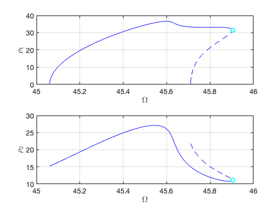 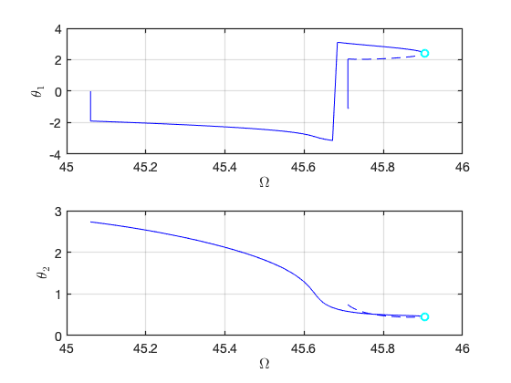FRC in physical space:
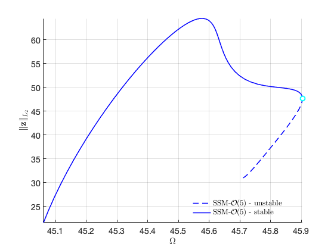 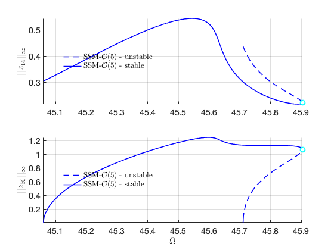We also perform branch switching at the other BP point. It is expected that the results are the same as the above.
S.SSM_BP2ep('o5-bp2','isol-5',BPlabs(2),'freq',omegaRange,outdof);
Run='o5-bp2.ep': Continue equilibria along secondary branch from label 12 of run isol-5.
STEP TIME ||U|| LABEL TYPE om Rez1 Rez2 Imz1 Imz2 eps
0 00:00:00 7.1605e+01 1 EP 4.5710e+01 0.0000e+00 1.6032e+01 0.0000e+00 1.4736e+01 1.0000e-01
1 00:00:00 7.1605e+01 2 SN 4.5710e+01 1.4569e-04 1.6032e+01 -2.7785e-04 1.4736e+01 1.0000e-01
1 00:00:00 7.1605e+01 3 FP 4.5710e+01 6.6439e-03 1.6032e+01 -1.2671e-02 1.4736e+01 1.0000e-01
10 00:00:01 7.1950e+01 4 4.5725e+01 4.5192e+00 1.5840e+01 -9.1033e+00 1.1972e+01 1.0000e-01
20 00:00:02 7.7255e+01 5 4.5862e+01 1.5220e+01 1.1561e+01 -2.2038e+01 5.4666e+00 1.0000e-01
30 00:00:03 8.0239e+01 6 FP 4.5903e+01 2.3336e+01 9.9355e+00 -2.1093e+01 4.8806e+00 1.0000e-01
30 00:00:03 8.0239e+01 7 SN 4.5903e+01 2.3336e+01 9.9355e+00 -2.1093e+01 4.8806e+00 1.0000e-01
30 00:00:03 8.0349e+01 8 4.5903e+01 2.3746e+01 9.8844e+00 -2.0871e+01 4.8744e+00 1.0000e-01
40 00:00:03 8.1671e+01 9 4.5816e+01 3.1180e+01 1.0218e+01 -1.1358e+01 5.5085e+00 1.0000e-01
50 00:00:03 8.5434e+01 10 4.5654e+01 3.4379e+01 1.4132e+01 2.7190e+00 1.3272e+01 1.0000e-01
60 00:00:04 9.0281e+01 11 4.5607e+01 3.3986e+01 8.6697e+00 1.3579e+01 2.4098e+01 1.0000e-01
70 00:00:04 8.9817e+01 12 4.5520e+01 2.7638e+01 -4.4945e+00 2.1636e+01 2.6633e+01 1.0000e-01
80 00:00:05 8.3252e+01 13 4.5361e+01 1.7297e+01 -1.4439e+01 2.3121e+01 1.9122e+01 1.0000e-01
90 00:00:06 7.2998e+01 14 4.5165e+01 6.9785e+00 -1.5585e+01 1.5508e+01 9.6126e+00 1.0000e-01
98 00:00:06 6.7264e+01 15 FP 4.5060e+01 8.6889e-05 -1.3945e+01 2.6264e-04 6.1061e+00 1.0000e-01
98 00:00:06 6.7264e+01 16 BP 4.5060e+01 -3.5952e-06 -1.3945e+01 -6.0548e-06 6.1061e+00 1.0000e-01
100 00:00:06 6.8688e+01 17 EP 4.5087e+01 -2.8806e+00 -1.4423e+01 -7.9272e+00 6.8622e+00 1.0000e-01
FRC in parametrisation space:
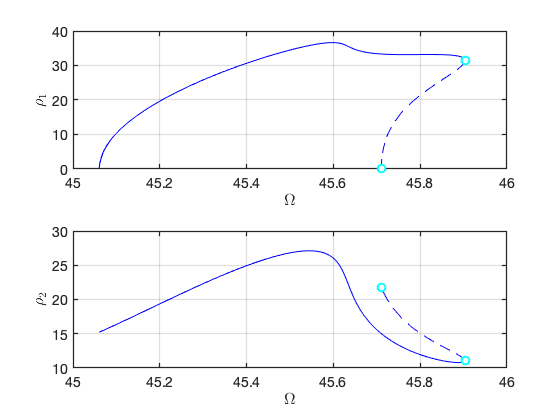 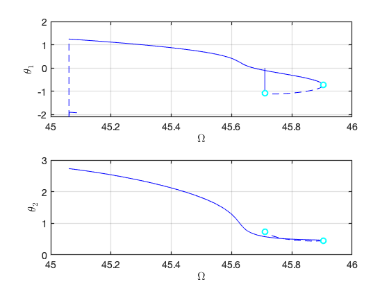FRC in physical space:
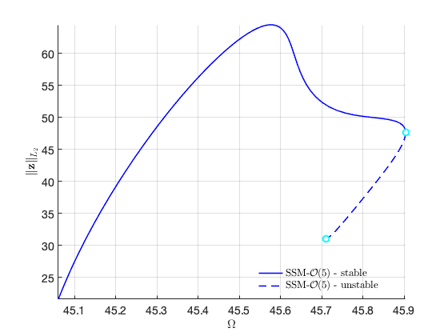 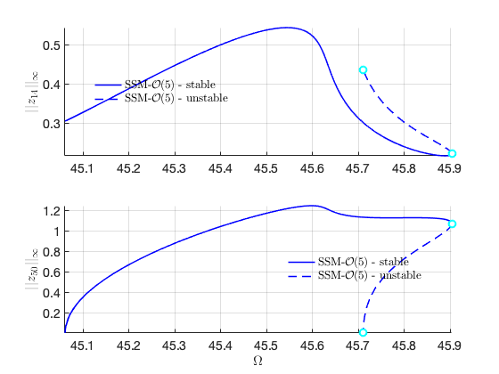FRC with both solution branches
Now we are ready to put two branches of solution at the same figure. We collect the data of the two FRCs and plot them on top of each other (please refer to the example in the toolbox for the code).
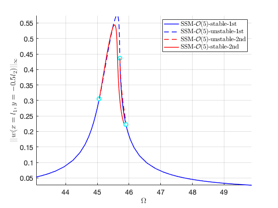 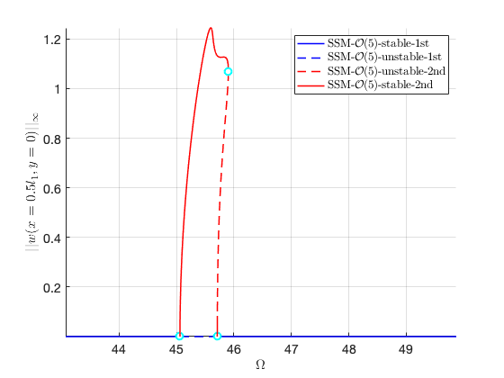 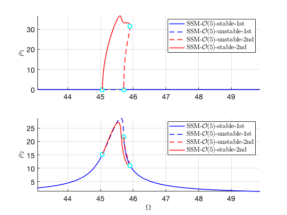